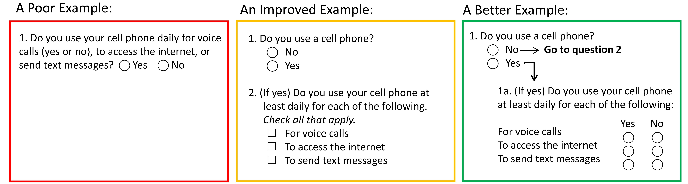
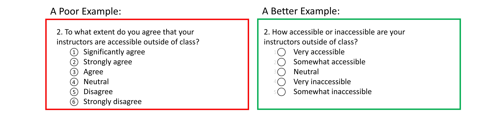
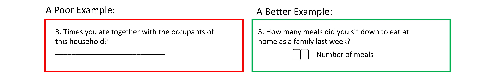
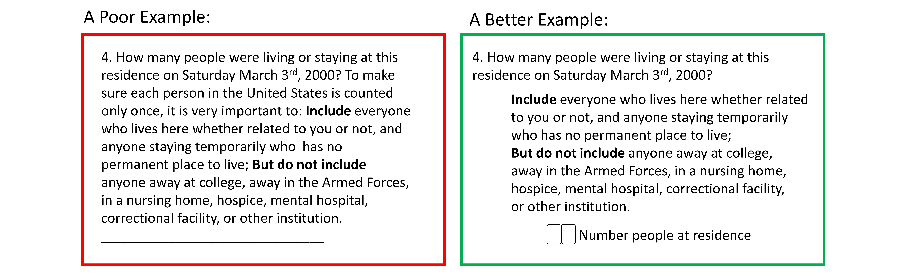
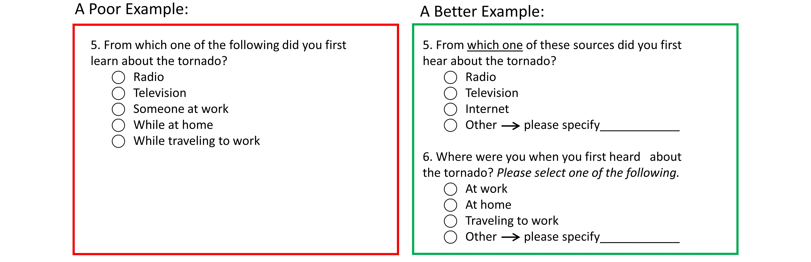
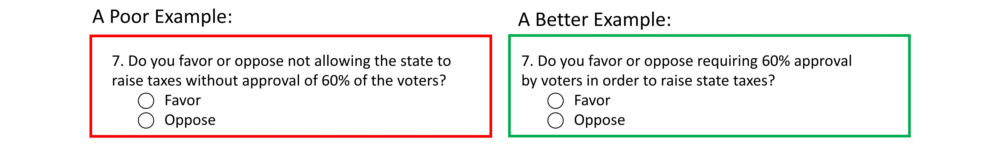
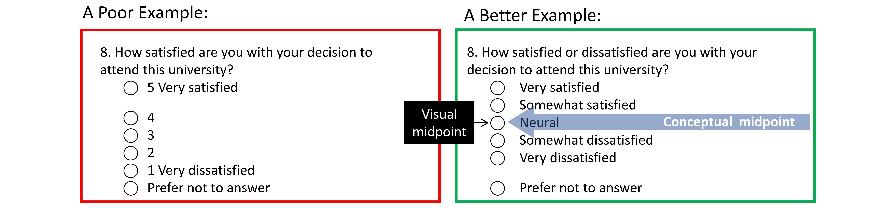
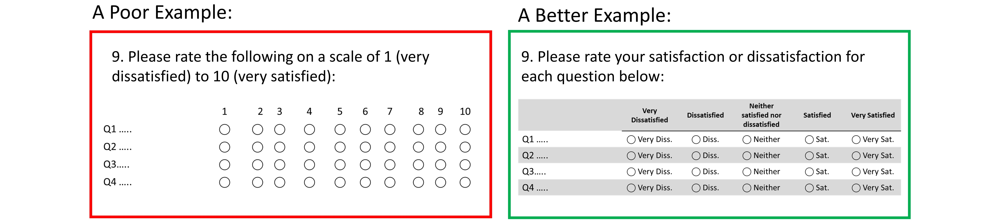

Survey Design 2: Designing Effective Questions
Topic: Review of empirically validated methods and strategies for designing effective surveys and questions.
This document follows the recommendations of the Tailored Design Method by D.A. Dillman (2014).
Overview
Always consider how the questions, questionnaire, and invitation contacts will look from a respondent’s perspective; consider if each design feature will help people in some way, if it will not, then it should not be used. The most critical questions for the analyses may be asked first to ensure they are completed, and more sensitive information (e.g. income) can be asked at the end when trust and rapport have developed. Notably however, if the main objective is to replicate a previous survey or make the new results comparable in some other way, usually no changes or only minimal changes can be made to the survey.
The visual design of the survey and questions can significantly impact whether and how people will respond. Visual design can minimize measurement error and item nonresponse, but if it is done poorly it can exacerbate both.
Many important decisions have to be made when writing effective questions. These decisions differ depending on the intent and format of the question that is being written. In addition, what might seem like an insignificant decision can strongly impact respondents’ answers.
Identify Your Primary Aims
First, you must have clear research questions to identify what needs to be measured and that all essential topics will be evaluated. Break down the concepts of interest until you get to subdomains that can be measured with a single question. If standardized measures are available, they should only be adopted if they are well written and suited to the particular needs of the project.
It is important to think about and plan the key analyses before finalizing the survey design. Consider what variables will be needed and their possible answer choices. It may be best to think about the results you want to display (creating tables with labels and variable names), then work backwards from the desired tables/figures to determine what question format is needed for each item.
The Order of Questions
A questionnaire is not a compilation of independent questions that have no effect on one another; the surrounding questions are will influence how respondents interpret and answer questions. The survey should begin with salient and interesting questions; paticipants will be more likely to respond, and as they proceed will build commitment to the questionnaire, reducing the likelihood stopping early. Additionally, the intial questions should be connected to the purpose of the questionnaire to give the survey a feeling of consistency and help promote trust. Sensitive or potentially objectionable questions should be placed near the end of the survey, that way respondents get to them after they have had an opportunity to become engaged with the questionnaire, and have established rapport with the surveyor/survey. Lastly, related questions should be grouped together and questions about events should be in the order the events occurred; this is consistent with normal conversation and makes it easier for respondents to answer.
Designing Effective Questions and Answer Choices
Example 1:

Key improvements:
- Ask questions that apply to all respondents (e.g. it must require an answer from all respondents)
- Ask questions one at a time
- Ensure there is a clear separation of questions and answers (do not embed the response options in the question stem)
- Consider using uniquely shaped answer spaces (circles and squares) to help respondents distinguish between different types of questions (single- and multiple-answer choice questions, respectively).
- Use arrows and visual cues to provide a clear navigational path. Place instructions (written or graphical) exactly where they are needed rather than including them as free-standing entities.
- Use ‘forced-choice’ questions instead of ‘check-all-that-apply’ questions. Participants are less prone to evaluate each item in check-all-that-apply questions, and more likely to select the first items of the list.
Example 2:

Key improvements:
- Reduce complexity - question stem and response options should match
- Provide balanced scales - categories should be relatively equal distance apart
- Avoid having too many response options because it may become difficult to differentiate items
- State both the positive and negative side in question stem; for unipolar scales use ‘if at all’
- Do not include or minimize salience of elements not important for respondents
Example 3:

Key improvements:
- Use complete sentences
- Use specific, concrete language; do not allow room for interpretation
- Use simple, familiar language; avoid abbreviations or specialized language
- Encourage the use of the desired response type by providing appropriately sized response fields, and labels near the answer field, and templates with answer spaces. Provide a single answer box if only one answer is needed and multiple answer boxes if multiple answers are needed
Example 4:

Key improvements:
- Use as few words as possible to pose the question
- Eliminating wordy and redundant expressions
- Provide appropriately sized response fields, and labels near the answer field
- If questions require optional/occasional instructions (such as example above), and this information should be presented in a less salient manner and separate from the question stem.
Example 5:

Key improvements:
- Ensure response options are exhaustive and mutually exclusive
- If ambiguous, specify that one answer choice should be selected
Example 6:

Key improvements:
- Reduce complexity
- Avoid double negatives (ensure that “yes” means yes)
Example 7:

Key improvements:
- Label all response options; avoid using numbers
- Ensure there is equal spacing between answer choices even if some answer choices are longer; items located close together will be perceived as belonging together.
- Ensure that the conceptual and visual mid-point of the answer choices are both aligned. Non-substantive answer choices (such as ‘don’t know’, ‘undecided’) should be placed after and spaced a little further from the substantive answer choices.
- State both the positive and negative side in question stem; for unipolar scales use ‘if at all’
Example 8:

Key improvements:
- Use visual cues (lines, shading) to make it easy to move across the grid
- Ensure equal spacing
- Break down large grids into a series of smaller grids
- Qualitatively label all categories. Do not list “1 Very satisfied”, “2”, “3”, “4”, “5 very dissatisfied”.
Other Considerations
- Ensure the question is technically accurate. Using specialized terms commonly used and accepted among the survey population will likely produce a more accurate measurement.
- Make things as easy and simple as possible. Use complete sentences in question form, with a simple sentence structure and with simple and familiar words. Use specific and concrete words to specify the concept clearly. Do not be vague or allow room for varying interpretations.
- Answer choices should include all reasonable possible answers and should be mutually exclusive.
- In terms question length per line, a moderate line length of 3 to 5 inches is recommended.
- Long lines may make it difficult to track along the lines, and short lines require a lot of eye movement to move to the next line.
- Choose an appropriate scale length – long enough to represent the entire continuum of answers, but without so many categories that they begin to burden respondents or differences become meaningless.
- For bipolar scales (e.g. questions asking for agreement and disagreement), 5 to 7 categories may be ideal. For unipolar scales (e.g. questions asking about level of concern), 4 to 5 may be ideal.
- For bipolar questions, including a middle, neutral point, does not make much of an impact; neither does starting with positives vs. starting with negative items. You just need to be consistent.
- When considering non-substantive response options such as “don’t know”, “no opinion”, “undecided”, consider each question individually. Research is mixed and has found that such options may allow people to answer honestly or that it may provide an easy answer for those unmotivated.
- If asking respondents to rank items, only ask them to rank a few items at a time, rather than a long list to reduce cognitive load.
- Beware of vague quantifiers (e.g. “sometimes”, “often”, etc.) that may mean different things to different people and mean different things for different questions.
- Ensure that question stem and answer options match. Use construct-specific scales; pose questions in a way that matches the response scale.
- For example, do not ask “To what extent do you agree or disagree that you enjoyed the movie?” It is much easier to answer this question when it is phrased more directly: “How much, if at all, did you enjoy the movie?”
Overall Survey Design
- Avoid visual clutter.
- Standardize the design properties of questions, answer spaces, and response options.
- Visual navigation guides, used in a consistent way, are important to make it easy for respondents to follow the prescribed navigational path.
- Use darker/larger font for the question stem in comparison to answer choices to create contrast and separate the question stem and answer choices.
- Use visual elements consistently to emphasize or deemphasize certain types of information. For example, do not include or minimize the salience of elements that are not important for respondents, such as extra information that is important for data processing or scoring.
- Use color, contrast, and enclosure (e.g. placing a box around the area) to help respondents recognize the different components and the navigational path through the survey.
- Lightly shaded backgrounds help responses identify regions where they should focus, and allows the use of white answer spaces to highlight where answers are required.
- Consistently identify the beginning of each question or section. For example through the use of numbering questions which will help participants understand the organization and ordering of the survey components.
- Design the survey with professionalism in mind and consider the population in choosing a font size (usually 10- to 12- point font is recommended for most populations).
References and Further Readings
Dillman, D. A., Smyth, J. D., & Christian, L. M. (2014). Internet, phone, mail, and mixed-mode surveys: the tailored design method. John Wiley & Sons.